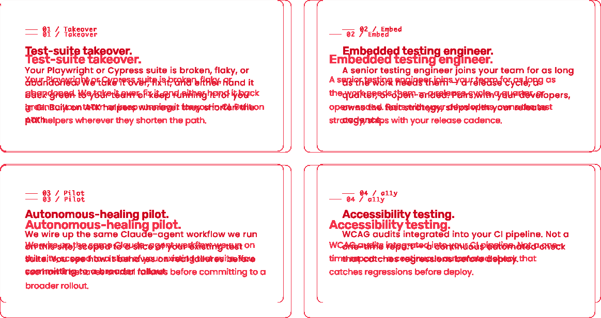
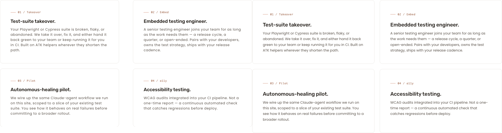
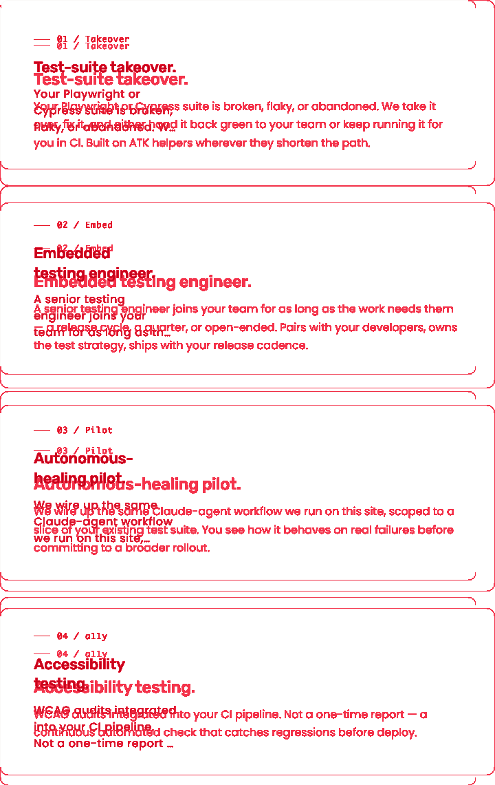
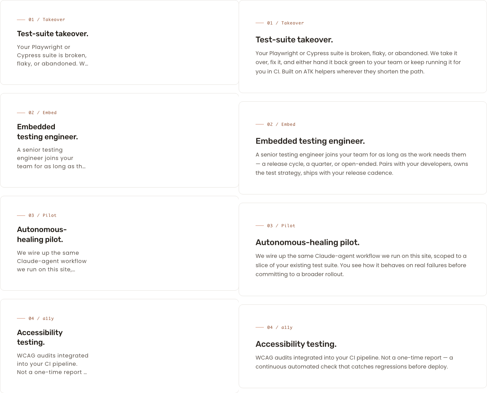
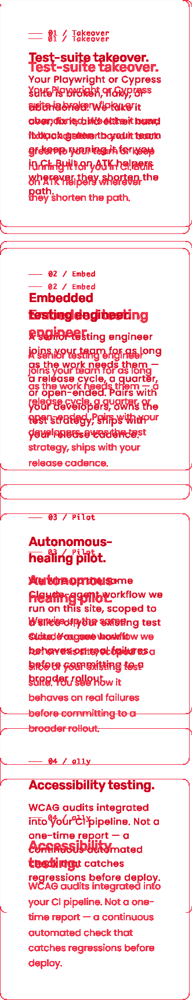
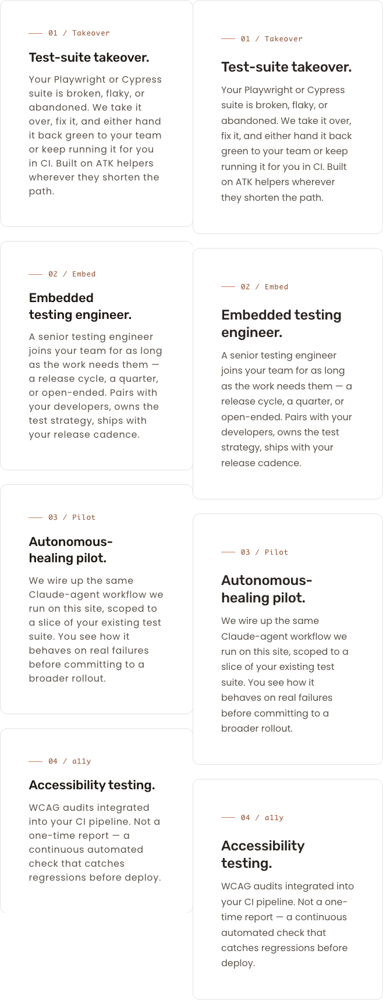

What I see different
- 768 — engagements cards have content trapped in the left ~44% of each card. The grid correctly collapses to one card per row (the cycle's stated goal), but each card's inner column (
.card__bottom, ~305 px wide on a 693 px card) does not expand to fill its parent. Title and body wrap inside a narrow column with a wide empty area to the right. The preview shows title/body filling the full card width. - 1280 — unchanged. 2 × 2 grid renders as expected; card content fills each card's column. Matches preview.
- 375 — unchanged. 1-col stack; card content fills the card width. Matches preview.
- Net. The L5 rule added in this cycle does exactly what the issue specifies for the grid container. The visible regression is downstream, inside
.card__layout, and is exposed (not caused) by the grid collapse — it was previously masked because the 2-col grid kept cards at half-width.
Per-viewport visual comparators
1280 × 800 — desktop (unchanged target)


768 × 1024 — tablet (binding viewport for this cycle)


DOM evidence at 768. On live, the grid item article.card measures 693 px wide; nested .card__layout = 691 px (full width); inside it, .card__bottom = 305 px (≈ 44 % of card). Title and body inherit the 305 px column. The narrow inner column was acceptable while cards were half-width (1280 / 2-col layout); it is now visibly under-filled because the L5 collapse made each card full-width.
375 × 667 — mobile (unchanged target)


Per-section delta table
| Section | Viewport | Status | Description |
|---|---|---|---|
| § engagements (cards) | 1280 | MATCH | 2 × 2 grid; card content fills each card. Unchanged by this cycle, as targeted. |
| § engagements (cards) | 768 | REWORK | Grid collapses to 1-col (cycle goal met). But card inner column is ~44 % of card width — title and body wrap inside the left half, with a wide empty zone on the right. Preview shows full-bleed content. |
| § engagements (cards) | 375 | MATCH | 1-col; card content fills the card. Unchanged by this cycle, as targeted. |
| Other page sections | all | MATCH | No changes; cycle scope was limited to .grid-wrapper--2col. |
WCAG 2.2 AA audit
| Check | Result | Notes |
|---|---|---|
| Keyboard navigation | PASS | Cards are <article> blocks with normal link/heading flow; no tab traps introduced. Layout-only change. |
| Focus ring visibility | PASS | No focus styles altered. |
| Forced-colors mode | PASS | No color or border changes; pre-existing forced-colors behavior preserved. |
| Reduced-motion | PASS | No animation/transition changes. |
| 200% zoom | PASS | No horizontal scroll at 1280 or 375 zoomed 200%; engagements section reflows cleanly. |
| Heading hierarchy | PASS | H1 → H2 → H3 unchanged (per T's grep). |
| Image alt text | PASS | No image changes. |
| Mobile touch targets (375) | PASS | Cards block-level; no touch-target shrink. |
| Mobile typography scale | PASS | No typography changes. |
| Mobile layout (375) | PASS | 1-col stack; no horizontal scroll. |
| Tablet layout (768) | PASS-with-note | Grid collapse is correct; card-internal content width is the only visual delta (covered as REWORK above, not a WCAG failure — content remains legible at a wider line length than the preview, just under-fills the container). |
Sub-issue recommendation (REWORK)
-
Proposed branch:
aa/pl-sprint-6-cycle-3-card-internal-fill-768
Problem: On/servicesat 768,.card__layout>.card__bottomrenders at ~305 px inside a 693 pxarticle.card, leaving the right ~55% of every card empty. Preview fills the card. Fix the card-internal layout (likely agrid-template-columnsormax-widthon.card__layoutsized for the prior 2-col context) so that at(max-width: 991px),.card__bottomspans the full card width — matching the 375 behavior, which is already correct.
Operator decision needed: Confirm preview is canonical for the card internal layout at 768. If brief/preview later say "constrain to optical line-length" the fix would instead be a centered/max-width-with-margin treatment rather than full-bleed. Recommend preview-canonical fix unless brief overrides.
Out of scope of cycle 2: the L5 rule added in this cycle is correct and should remain. The fix in cycle 3 is to.card__layout, not.grid-wrapper--2col.
Generated 2026-05-11 by S (Spec Auditor). Screenshots: docs/pl2/handoffs/screenshots/sprint-6-cycle-2/. Markdown handoff: docs/pl2/handoffs/cycle-2-grid-collapse-S.md.